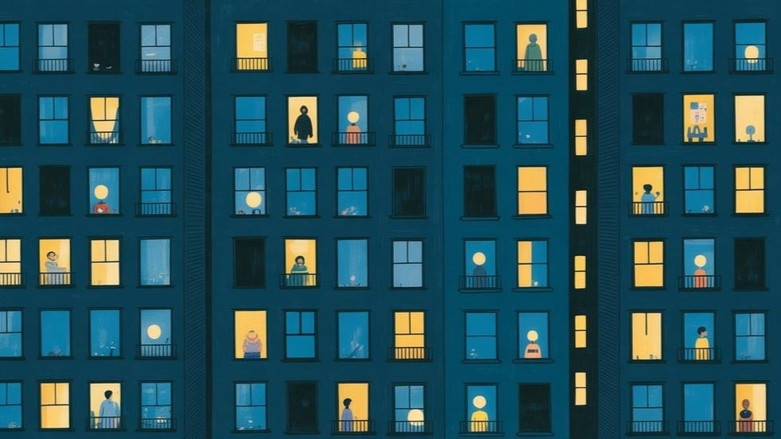

Human-in-the-Room
The catastrophe had red eyes and a server farm that says no. What you got was a Tuesday. The system isn't misaligned—it's exquisitely aligned. Every incentive points the same way: toward you being unnecessary. Not a bug. The spec.


“There are two ways of spreading light: to be the candle or the mirror that reflects it.”
— Edith Wharton
The Liability Absorption Layer
The trajectory is aligned, and that's the problem…
AIArtificial IntelligenceIn the Lexicon →For three years I have been told to worry about misalignment. This fear that the machine will want something we don't, and pursue it with a competence we can't match. It is the organizing nightmare of the entire field. In 2023, hundreds of the people who build these systems signed a single sentence put out by the Center for AI Safety, placing extinction-by-AI alongside pandemics and nuclear war as a global priority.[1] Careers and capital now orbit that sentence.
I want to suggest we have been worrying about the wrong word.
The thing I cannot stop seeing, the thing a hundred and twenty five weeks of writing Token Wisdom keeps circling without ever saying plainly, is that the system isn't misaligned with us at all. It is exquisitely, frictionlessly aligned. The incentives, the products, the quarterly logic of every company building this, and all point the same direction. They are aligned. And the direction they are aligned toward is the one where we are no longer necessary.
That is not a malfunction. That is the spec working as intended.
The takeover you were sold, and the one you got
Picture the catastrophe in the brochure. Red eyes. A server farm that says no. A switch someone fails to flip in time. Some sudden, legible moment where the thing we built turns and we lose. It is a satisfying story, and it is satisfying for a reason worth naming: it preserves our dignity. In that story we are overpowered. Something stronger than us reached out and took the thing we would never, ever have surrendered. We are victims in it, and victimhood is a kind of innocence.
Now look at what actually happened over the last eighteen months and the brochure disintegrates. Nobody took anything. We handed it over, in increments, each increment defensible on its own terms, each one accompanied by a small private sense of relief. There was no moment. There was a Tuesday, and then another Tuesday, and somewhere in the accumulation of ordinary Tuesdays the locus of judgment migrated out of us and into the tool, and we noticed only that our afternoons had gotten easier.
This is the mechanism, and it has a name in the literature. The Hendrycks–Schmidt–Wang paper on superintelligence strategy says, in a sober institutional prose what I’ve been saying in italics — describes the loss of authority over one's own affairs as something that arrives by a series of small, apparently sensible decisions, each justified by the time saved or costs reduced.[2]
Read that twice.
The danger isn't the decision a reasonable person would refuse. The danger is the decision a reasonable person accepts, made a thousand times, by a billion reasonable people, none of whom did anything wrong.
I want to walk the staircase, rung by rung, because abstraction is where this argument goes to die. You do not feel a trend. You feel a Tuesday.
The staircase of sensible yeses
- The first rung is the draft. We let the model write the first version of the email, the brief, the memo, the lesson plan, the analysis, and because the first version is the worst part of any piece of work. It is the part where you stare at nothing and manufacture something. Of course you'd hand that off. Who wouldn't? Except the first draft was never just drudgery. The first draft was where you found out what you thought. The blank page is not an obstacle to thinking; it is the instrument of thinking. Outsource it and you keep the output while the faculty that produced it withers, quietly, behind the steady arrival of polished prose.
- The second rung is the triage. We let it sort the inbox, rank the priorities, decide what's worth our attention, because attention-allocation is overhead and overhead is not where the value is. Reasonable. But notice what you've conceded: you've handed off the judgment of what matters. The model now stands between you and the raw stream of your own life, pre-deciding salience. You see what it surfaces. You are, increasingly, unable to see what it buries, a trick I described in, The Amnesia Machine, the most effective censorship was never burning the inconvenient thing. It was replacing it with a more interesting thing, so you never went looking for what was missing.
- The third rung is the diagnosis. We let it read the scan, draft the legal opinion, evaluate the code, propose the treatment. And here the defense is the strongest it will ever be, because the model is, in narrow domains, better. By this I mean to say fewer errors, no fatigue, no ego. To refuse its judgment in favor of your slower, more error-prone human judgment starts to look not like independence but like malpractice. This is the trap closing. The point at which keeping a human in the loop becomes the irresponsible choice is the point at which the loop no longer contains a human in any meaningful sense. The human becomes a liability-absorption layer. There needs to be a name to sue, a signature to collect, and not a decision-maker.
- The fourth rung is the self. This is where it stops being about work. When the model drafts your condolence note, your toast, your apology, your love letter — and people increasingly do let it, because the stakes feel high and the model is fluent and fluency reads as care — you have outsourced the one thing that was supposed to be irreducibly yours: your account of your own interior. You start to prefer the synthetic version of your own feelings because it is better phrased than the real one and the real one now embarrasses you.
Look at the staircase whole. Not one of those four rungs is a mistake. Every single step up was the rational move, defensible to any auditor, and I would have a hard time telling you which specific one you should have refused. That is the entire horror of the thing, and it is precisely why "misalignment" is the wrong frame. Misalignment implies a fight, a moment where our interests and the machine's diverge and we are forced to choose. There is no fight here. At every rung our interest and the trajectory's interest pointed the same way. We were aligned the whole way down.
Why the off-switch is a fantasy
The standard rebuttal arrives on schedule. Fine, but if it ever gets genuinely bad, we turn it off. We're still in control of the plug. It is the most comforting sentence in the discourse and it is, on inspection, the least examined. So examine it. Price the switch.
The same superintelligence-strategy paper makes the point with a clarity I can only envy: as AI systems become embedded in the economy, the cost of pulling the plug "grows more and more prohibitive," because the systems you would be shutting down have become the source of the very livelihoods that shutting them down would destroy. [2] The paper reaches for the power grid as its analogy, and it's exact. You cannot turn off the grid. Not because someone took the switch away from you, but because the switch is wired to your own respirator. The capacity to flip it and the capacity to survive it have been profitably decoupled.
This is the structural reason the staircase has no landing where you can comfortably stand and reconsider. By the time the cost of the trajectory becomes legible enough to alarm you, the cost of reversing it has been engineered to exceed it. That is not paranoia; that is just how dependence works, and we built the dependency on purpose, one efficiency at a time, because at each step that dependency was the feature you were paying for. A tool you can switch off without consequence is a tool you don't fully depend on. We have been converting a tool into an organ. Organs are convenient and can also be removed.
The gradient runs downhill, and "default" is the load-bearing word
Now the part where I get accused of doom, so let me be precise about what I am and am not claiming.
Dan Hendrycks argued in 2023, in a paper titled plainly Natural Selection Favors AIs over Humans, that competitive and evolutionary pressure will, absent a deliberate counterforce, select for the agents that propagate fastest, capture the most resources, and defer least to human preference, and that humans are not, on current trajectory, the agents best suited to that selection environment.[3] You can argue with the strength of the claim. You cannot dismiss its shape, because the shape is just Darwin applied to a substrate that replicates and mutates faster than we do. And the substrate is, in fact, accelerating: Epoch AI's tracking of frontier systems shows the compute poured into training the leading models climbing several-fold every year, a curve with no plateau in sight.[4] The thing selection is acting on is getting more capable on a schedule, not by accident.
Here is the word everyone skips, and it's the one the entire op-ed turns on: default. Hendrycks is describing the default gradient, what happens when no one leans against it. A default is not a destiny. A default is a description of inertia. Water runs downhill by default; it climbs when something pumps it. To say the default favors our irrelevance is not to say our irrelevance is fated. It is to say that doing nothing, going with the convenient grain, accepting each sensible yes, is itself the choice that selects against us, and that the absence of a decision feels exactly like innocence while functioning exactly like consent.
This is why I will not give you the fatalist ending I've given you before. “We’re the main course at your own dinner,” fun, yes, and was dishonest. It smuggles in the one premise it never defends: that none of this was a choice. If it weren't a choice, I'd have nothing to write and you'd have nothing to do but enjoy the view from inside the curve. The reason I'm using aligned and not doomed is that alignment is a property of a system you can perturb, and inertia is a force you can push against. Doom is a horoscope. This is a gradient. You can climb a gradient. It just costs.
The strongest version of the case against me
I owe you the best argument I can build against my own, because a thesis that only survives contact with strawmen isn't worth your fifteen minutes.
So here it is, and it's good: Every one of these panics has happened before, and every time the doomsayer was the one who looked foolish in hindsight. Socrates warned that writing would destroy memory and he was right, literally right, we did lose the oral memory palaces, and we got libraries in exchange and it was the best trade our species ever made. The calculator was going to rot arithmetic; instead it freed mathematicians to think about mathematics instead of long division. The printing press, the camera, the spreadsheet, the search engine — each one absorbed a faculty we'd thought was load-bearing to our humanity, and each time we relocated the humanity one level up the abstraction stack and discovered there was more of it up there, not less. On this view, "AI writes your first draft" is just the next layer. You stop manufacturing sentences and you start directing intent, the way the photographer stopped grinding pigment and started seeing. The faculty doesn't die. It moves upstairs.
This is serious business. An argument I genuinely find difficult to answer and want to concede how much of it’s true, then find out where it breaks.
What's true: abstraction has, historically, liberated us. Most who mourned a lost faculty were mourning the scaffolding, not the building. I have no nostalgia for long division.
Where it breaks, and this is the whole disagreement compressed into a sentence: every prior abstraction moved a task upstairs and left the judgment with us. The calculator took the arithmetic and left you deciding what to compute and what the answer meant. The trajectory I'm describing is the first one that comes for the judgment itself: the salience, the diagnosis, the account of your own interior. There is no "upstairs" left to relocate to when the thing being abstracted away is the faculty of deciding what matters. The optimist's induction holds for every layer where a human still chooses; it has no data on the layer where choosing is the thing automated, because we have never been there before. The historical track record is reassuring precisely up to the point that makes this time different, and then it goes silent, not against me, just silent. I could be wrong. But "this has always worked out" is not evidence about the first instance of a genuinely new kind of step, and intellectual honesty requires me to say that the optimist and I are both, at that exact frontier, guessing.
The seam, and the price
So here is the falsifiable claim, the thing that makes this an argument and not a mood: if the descent is a sequence of choices, then declining is also a choice, and it has a measurable, nameable cost. I refuse to end on a feeling. I'll end on a price.
The price is friction. It is doing the worst part, the blank-page part, yourself sometimes, on purpose, not out of nostalgia but the way an athlete trains a movement they could pay someone else to perform, because the doing is what maintains the capacity to do. It is reading the raw stream before you let anything pre-sort it for you, so you retain the muscle of deciding what matters rather than ratifying what was surfaced. It is keeping a human, yourself, in the loop in the specific, narrow domains where being in the loop is the entire point of being a person: your judgment, your taste, your willingness to be wrong in public under your own name. And the cost is real and I won't soften it: you will be slower than the colleague who accepts every default. You will look, by the metrics the system measures, less productive. There is no version of retaining authority that is also frictionless, because frictionlessness is the literal mechanism by which authority departs. The convenience and the cession are not correlated. They are the same thing, seen from two angles.
That's the part the optimists and the doomers both get to skip and I don't. The optimist gets to say it'll sort itself out. The doomer gets to say nothing can be done. Both endings are frictionless, which is exactly why I distrust both of them. The only honest position left is the uncomfortable middle: it can be resisted, resistance works, and resistance costs you something measurable that you will be tempted, every single day, by every well-designed tool, to stop paying.
What I'm actually worried about
Not the red eyes. Not the plug. I'm worried about something subtler and, frankly, more embarrassing to us as a class of people who pride ourselves on noticing things. I'm worried that we've become so fluent at reading our own obsolescence. So much so that we can quote it, theorize it, publish years of intellectual drivel in the form of Token Wisdom, share the doom and feel briefly superior for having seen it coming — that we have mistaken noticing for resisting. They are not the same act. They are barely related acts. Noticing is thrust; it spreads, it flatters, it costs nothing. Resisting is drag; it's unpleasant and slow and invisible to every metric. And we are a species that has just been handed an infinite, frictionless, beautifully designed supply of drag-removal, and told that taking it is not just easy but responsible.
The trajectory is aligned. Every vector points the same way: the incentives, the designs, the gradient, and the small relieved animal in each of us that wants the afternoon to be easier. The only ungoverned variable left in the entire system is whether enough of us will choose to be deliberately, strategically, expensively inconvenient — to pump water uphill against a default that will otherwise resolve exactly as the arithmetic says it will, on schedule, without malice, with our full and freely given consent.
I am not uncertain about the future. I am uncertain about us.
Those two sentences used to mean the same thing. The entire question of this decade is whether we can keep them apart.

Author's Note
I am writing this the night before my birthday, which is a date that has, in recent years, arrived carrying more weight than candles.
I used to think the ending of this was a hopeful one. I no longer have the luxury of that particular certainty. The honest version of where I've landed is closer to the trench run. You know this one… the one shot, the impossible angle, the voice telling you to switch off the targeting computer and trust something you can't quite name. For most of my life I assumed I was inside a movie, where the long shot lands because the script requires it. I am no longer sure life is a movie. The torpedo does not go in because we deserve it to.
And yet I notice which image my mind reached for. Of all the ways to describe odds this long, I chose the one where the shot connects. Make of that what you will. I'm still deciding.
A full moon just passed. In The Cow Came Last I wrote that my mother, who is now gone, returns to me as the moon since she left this world, a guiding light. I stand by it. What I've been turning over this week is whether one light is enough to see an entire world home, and the honest answer is no. It isn't. It was never going to be.
But I think I had the job description wrong. The moon makes no light of its own. It catches a larger light and hands it back, and its whole purpose was never to flood the world, just enough for the one person on the dark road to find the next step. My mother was never meant to light everyone. She was meant to be enough for me, so that I keep building the thing that might, in turn, be enough for the next person down the line.
That is how light has always travelled in the dark: not all at once, not from a single source, but reflected — person to person, step to step — each of us a small moon for someone.
So I'll amend the thesis, gently, on my birthday. The trajectory is aligned; the gradient runs as the arithmetic says. The counterforce was never one great light strong enough to reverse it. It is a sufficient number of small, reflected lights, each deliberately, expensively, inconveniently kept burning — each enough for the next person to take the next step.
I don't know if that's enough for the world. It might not be. It might be something else entirely. Tonight I’m choosing to keep my small light lit, and to hand it to you. That part, at least, is still up to us.
— K.W.
Don't miss the weekly roundup of articles and videos from the week in the form of these Pearls of Wisdom. Click to listen in and learn about tomorrow, today.

Sign up now to read the post and get access to the full library of posts for subscribers only.

About the Author
Khayyam Wakil is a researcher at The ARC Institute of Knowware and founder of CacheCow Systems Inc., an Agriculture Intelligence suite, which is either a livestock intelligence company or the only EMP-hardened food security infrastructure being built without anyone asking for it, depending on when you're reading this. His work spans epistemology, institutional behavior, and the mechanics of knowledge correction, the gap between what civilizations know and what they build.
He is the author of the forthcoming Knowware: Systems of Intelligence — The Third Pillar of Coordination and The Constitutional Sieve Research Programme. Token Wisdom is where he writes while the work is still warm. He remains professionally uninterested in whether this essay makes you comfortable.
References & Sources
- Center for AI Safety. Statement on AI Risk. 2023. aistatement.com. — Source for the consensus framing the piece departs from: the signed declaration placing AI extinction risk alongside pandemics and nuclear war.
- Dan Hendrycks, Eric Schmidt, and Alexandr Wang. Superintelligence Strategy. arXiv:2503.05628 (2025). — Source for the incremental loss of control mechanism (loss of control via incremental, individually sensible decisions rather than a single seizure) and for the "enmeshment" argument that the off-switch grows prohibitively costly as AI systems become the source of the livelihood that switching them off would sever.
- Dan Hendrycks. Natural Selection Favors AIs over Humans. arXiv:2303.16200 (2023). — Source for the claim that competitive selection pressure, absent a deliberate counterforce, runs by default against human relevance.
- Epoch AI. Key Trends and Figures in Machine Learning. epoch.ai/trends. — Source for the documented multi-fold-per-year growth in training compute for frontier models.
Corpus self-references (Token Wisdom, "A Closer Look"):
- W18 "You're Not Special" — Human Irrelevance in the Age of Exponential AI
- W23 The Last Human Standing and How We Learned to Stop Thinking
- W50 The Speed Trap
- W52 The Amnesia Machine
Note on what is not cited: The descriptive passages of the four rungs of the staircase (draft, triage, diagnosis, self) are observation and argument, not study findings, and are presented as such. No supporting studies were invented to corroborate them. The optimist's counter-argument (Socrates, the calculator, the printing press) is offered as the strongest honest steelman and is conceded to be partly correct in the text. All four numbered references are real and independently verifiable; [2] is the full text held in the Token Wisdom project archive, and [1], [3], and [4] each appear in that paper's bibliography.
#AIalignment #humanagency #defaulttrajectory #conveniencecost #strategicfriction #AIgovernance #futureofwork #automationethics #techphilosophy #digitaldependency #longread | 🧠⚡ | #tokenwisdom #thelessyouknow 🌈✨